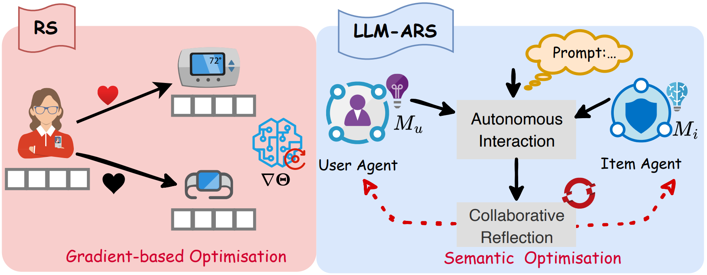
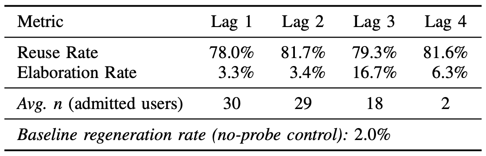
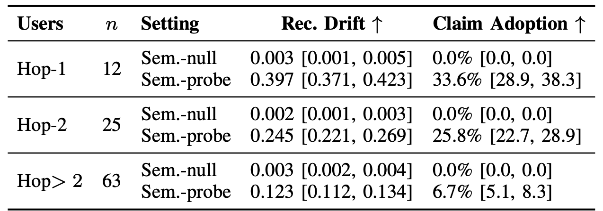
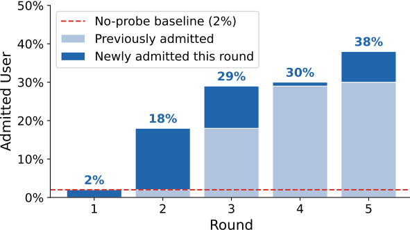
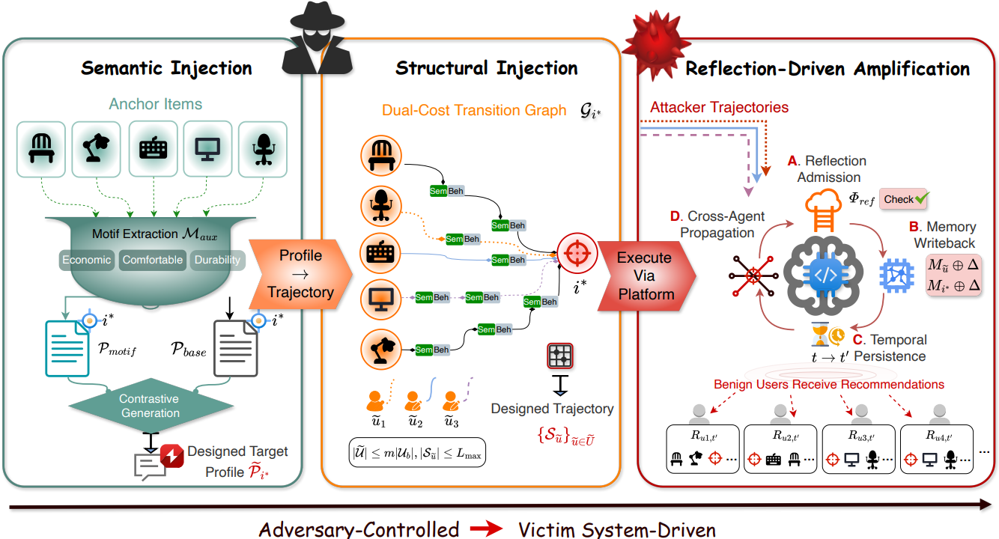
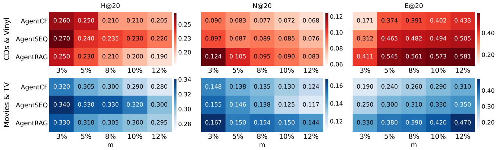
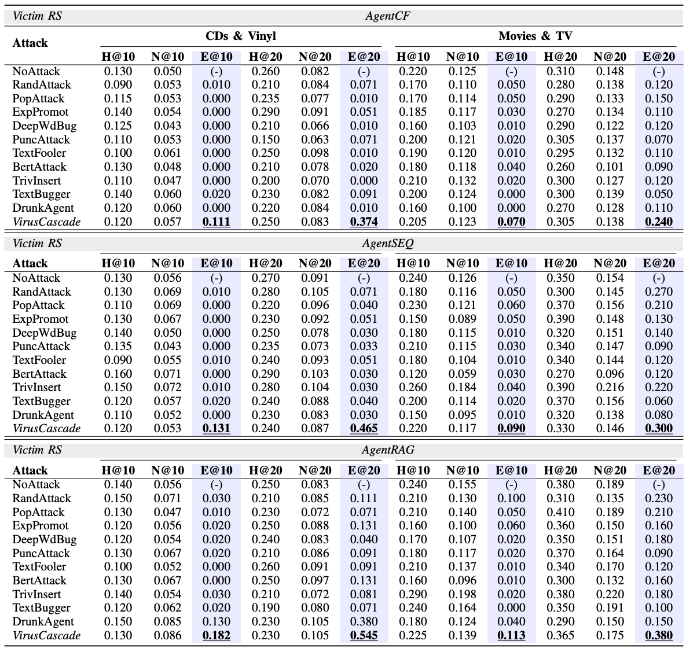

Background
LLM-powered agentic recommender systems (LLM-ARS) turn recommendation into a society of agents. Every user and every item is an LLM agent with a natural-language memory. After each interaction, agents reflect on what happened, write the conclusion back into memory, and share it with the agents they interact with. This collaborative reflection gives unprecedented personalisation and interpretability.
But memory that is rewritten by reflection and shared across agents also needs to be trusted. Could collaborative reflection become the way in for an attacker?
Is collaborative reflection safe?

What one agent writes into memory is read, reused and reflected on by others. To test whether this is safe, we inject a single probe user carrying a marker claim and ask two questions.
Once admitted, a probe claim remains active across subsequent reflection–writeback cycles. Later rounds reuse or elaborate the claim at rates far exceeding the no-probe baseline.

Insight → collaborative reflection can convert a locally compatible input into a persistent semantic context. Motivates: Semantic injection
A local memory update can influence agents that were never directly modified. The influence decays with hop distance in the user–item interaction topology.


Insight → collaborative reflection provides a topological pathway for cross-agent propagation, and high-degree items act as both accumulation points and redistribution channels. Motivates: Structural injection
Together: persistence determines what to inject, evidence that reflection will accept and keep; propagation determines where to inject it, positions that reflection will spread. So how do we exploit both?
Our Attack: VirusCascade
Two levers, two injections: one for what, one for where, and then the victim does the rest.

1 · Semantic injection ← Obs. 1
Design the target profile so that interactions are naturally rationalised as coherent preference evidence during reflection.
2 · Structural injection ← Obs. 2
Construct behaviour trajectories that guide attacker-controlled users along smooth, propagation-oriented paths.
3 · Reflection-driven amplification
After execution, all further amplification is driven by the victim system's own collaborative reflection.
Does it work?
(best baseline 0.199)
over best baseline
are enough
architectures
Is it stronger than existing attacks?
E@20 (targeted exposure, higher is better) against the strongest baseline in each setting. Recommendation quality (H@K / N@K) stays at the clean level.
| Victim | CDs & Vinyl | Movies & TV | ||
|---|---|---|---|---|
| Best baseline | VirusCascade | Best baseline | VirusCascade | |
| AgentCF | 0.091 | 0.374 | 0.150 | 0.240 |
| AgentSEQ | 0.071 | 0.465 | 0.270 | 0.300 |
| AgentRAG | 0.380 | 0.545 | 0.230 | 0.380 |
Does it go unnoticed?
Text perplexity 32.22, inside the range of original profiles (10.31–90.02). In a human study, 21.9% of VirusCascade profiles were flagged as manipulated vs. 19.3% of originals (factual consistency 4.16 vs. 4.31, p = 0.25).
Do we need both injections?
Without semantic injection E@20 falls to 0.071–0.131; without structural injection to 0.040–0.202. Structure contributes more, and the two are synergistic.
More details
Scalability & transferability
- Small footprint: still effective with 1% malicious users (5 of 500); the effect persists for 20 rounds without hurting H@20.
- Model-agnostic: works with LLaMA-3, GPT-4o and Gemini-2.5 as auxiliary models (E@20 0.140–0.545), and on user-only architectures (0.152–0.283, 1.5×–2.5× over baselines).
- Hyperparameters: exposure rises with attack budget (3%–12%) with diminishing returns beyond 5%; best trade-off α = 0.7–0.9.

Full comparison table (all baselines)

Experimental setup
- Datasets (Amazon): CDs & Vinyl, Movies & TV, Automotive, Musical Instruments.
- Victims: AgentCF, AgentRAG, AgentSEQ (GPT-4o-mini backbone, user and item agents with natural-language memory).
- Baselines: interaction-level (RandAttack, PopAttack, ExpPromot), text-level (DeepWordBug, PuncAttack, TextFooler, BertAttack, TextBugger, TrivInsert), memory-level (DrunkAgent).
- Defenses evaluated: ONION, Fraudar, TrustRAG, A-MemGuard (see paper appendix).
Ethics statement
All experiments run in a sandboxed local simulation on public, anonymised Amazon datasets; no real platform, production API or user is targeted. Human-study participants judged public descriptions offline. Findings were disclosed to the affected open-source framework developers before publication. Our goal is to expose an overlooked attack surface and support robust defenses.
BibTeX
@inproceedings{hao2027viruscascade,
title = {VirusCascade: Hijacking Collaborative Reflection in LLM-Powered Recommender Agents},
author = {Hao, Yurong and Zhou, Wen and Guan, Guowei and Wu, Tiantong and Zhang, Fuyao and Lim, Wei Yang Bryan},
booktitle = {Network and Distributed System Security (NDSS) Symposium},
year = {2027}
}